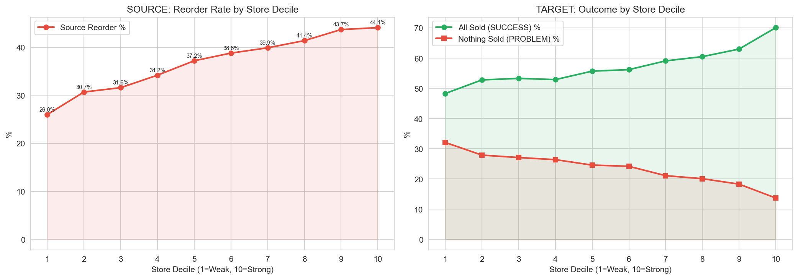
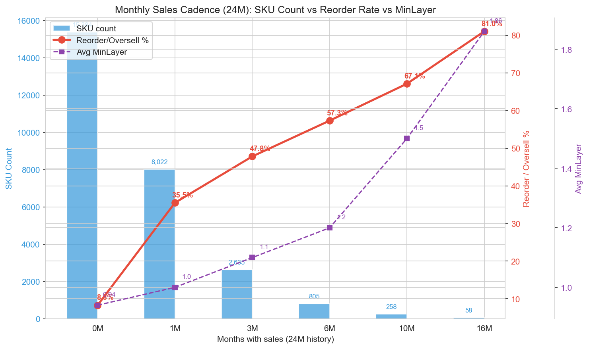
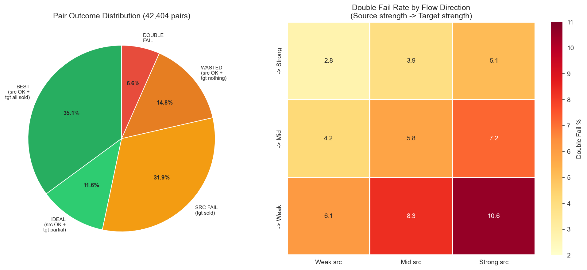

Konsolidovana analytika: SalesBased MinLayers - Calc 233
CalculationId=233 | EntityListId=3 | Datum kalkulace: 2025-07-13 | Monitoring: do 2026-03-22 | Generovano: 2026-03-22 03:46
1. Prehled
42,404
Redistribucnich paru
48,754 ks
Celkem presunuto
Cilove miry oversell
Cil pro 4M oversell: 5-10% | Cil pro 9M total: <20%
| MinLayer | 4M Oversell | 9M Total Oversell | Stav |
|---|
| ML0 | 1.1% | 2.3% | V CILI |
| ML1 | 3.6% | 12.5% | V CILI |
| ML2 | 5.1% | 22.2% | PREKRACUJE total cil |
| ML3 | 3.4% | 18.0% | V CILI |
Klicovy zaver: ML0 a ML1 jsou JIZ v cilovych mezich. ML3 je tesne pod cilem. Jediny problem je ML2 (22.2% total oversell),
ktery prekracuje 20% cil. Optimalizace by se mela zameret primarne na ML2 segment.
2. Prodejni vzory (24M historie) - primarni prediktor
Analyza 24-mesicni prodejni historie odhalila 5 vzoru, ktere silne predikuji oversell risk po redistribuci.
| Pattern | Popis | SKU | Oversell % | Avg MinLayer |
|---|
| Dead | 0 prodeju za 24M | 15,625 | 7.8% | 0.94 |
| Dying | Prodeje jen ve starsich obdobich | 6,427 | 9.7% | 0.90 |
| Sporadic | Nepravidelne prodeje | 9,891 | 15.3% | 1.10 |
| Consistent | Prodeje v 3-4 obdobich | 3,288 | 22.7% | 1.70 |
| Declining | Klesajici trend (B>C>D) | 1,539 | 28.3% | 1.10 |
Declining pattern je NEJHORSI: 28.3% oversell navzdory nizkemu prumerenemu MinLayer (1.1).
Tyto produkty maji klesajici prodeje - redistribuce z nich odvazi zbozi, ale zdrojova prodejna ho stale prodava (jen mene nez drive).
Kombinace Pattern x Store Strength

| Pattern | Weak | Mid | Strong |
|---|
| Dead | 5.1% | 7.8% | 10.0% |
| Dying | 8.1% | 9.7% | 12.6% |
| Sporadic | 10.9% | 15.3% | 20.1% |
| Consistent | 13.2% | 22.7% | 28.0% |
| Declining | 25.1% | 28.3% | 35.4% |
Pouze 6 z 15 segmentu prekracuje 20% cil. To znamena, ze pravidla nemusime zprisnovat ploskate pro vsechny - staci cilene zasahnout
problematicke kombinace (Sporadic/Strong, Consistent/Mid+Strong, Declining/vsechny).
3. Sila prodejny

Sila prodejny (merena decilem prodejnosti) ma linearni vliv na obe strany redistribuce:
| Metrika | Decil 1 (Weak) | Decil 10 (Strong) | Trend |
|---|
| Source Reorder % | 26% | 44% | Linearni rust: silnejsi prodejny = vice reorderu |
| Target All-Sold (SUCCESS) | 48% | 70% | Silnejsi prodejny prodaji vsechen redistribuovany tovar |
| Target Nothing-Sold (PROBLEM) | 32% | 14% | Slabsi prodejny = vice "zaseknuteho" zbozi |
Tok redistribuci: Vetsina redistribuci proudi Mid->Strong a Strong->Strong.
To znamena, ze redistributujeme prevazne mezi silnymi prodejnami, kde je vysoka sance prodeje na obou stranach.
4. Mesicni kadence prodeju
Kolik mesicu za poslednich 24M mel produkt prodeje na dane prodejne?

| Mesice s prodeji | SKU | Oversell / Reorder % | Avg MinLayer | Poznamka |
|---|
| 0M | 15,384 | 8.3% oversell | 0.94 | Zadne prodeje = nizky oversell |
| 1M | 8,022 | 35.5% reorder | 1.00 | Jediny mesic prodeju |
| 3M | 2,635 | 47.8% reorder | 1.10 | Sporadicke prodeje |
| 6M | 805 | 57.3% reorder | 1.20 | Pravidelnejsi prodeje |
| 10M | 258 | 67.1% reorder | 1.50 | Caste prodeje |
| 16M | 58 | 81.0% reorder | 1.86 | Temer stale prodeje |
MinLayer roste PRILIS POMALU: Produkt s 16 mesici prodeju (ze 24M) ma prumerny ML jen 1.86, ale 81% reorder!
Soucasna heuristika nedostatecne reaguje na frekvenci prodeju. Navrhujeme vyssi ML pro produkty s castymi prodeji.
5. Analyza redistribucnich paru
Kazdy par source-target muzeme klasifikovat podle vysledku na obou stranach:

| Vysledek paru | Popis | Pocet | Podil |
|---|
| BEST | Source OK (bez reorderu) + Target vse prodal | 14,896 | 35.1% |
| IDEAL | Source OK + Target castecne prodal | 4,923 | 11.6% |
| SRC FAIL | Source reorderoval, ale Target prodal | 13,530 | 31.9% |
| WASTED | Source OK, ale Target nic neprodal | 6,274 | 14.8% |
| DOUBLE FAIL | Source reorderoval + Target nic neprodal | 2,781 | 6.6% |
Target success rate: 78.6% - vetsina redistribucniho zbozi se proda (alespon castecne).
Tok a double-fail rate
| Smer toku | Double Fail % | Hodnoceni |
|---|
| Weak -> Strong | 2.8% | Nejlepsi smer |
| Mid -> Strong | 3.9% | Dobry smer |
| Strong -> Strong | 5.1% | Prijatelny |
| Mid -> Mid | 5.8% | Prumerny |
| Strong -> Weak | 10.6% | Nejhorsi smer |
Redistribuce ze slabych do silnych prodejen funguje nejlepe (2.8% double fail).
Opacny smer (Strong->Weak) ma 4x vyssi selhani. To potvrzuje, ze sila prodejny je klicovy faktor pro target.
6. Promo a cenova analyza
Promo share a oversell
Klesajici prodejni vzor (Declining) NENI zpusoben promakcemi - podil promo akci (~30%) je stejny jako u ostatnich vzoru.
Ceny produktu jsou stabilni (bez poklesu), takze Declining pattern reflektuje skutecny pokles poptavky.
| Promo podil | Oversell % | Poznamka |
|---|
| 0% (zadne promo) | 14.2% | Zakladni uroven |
| 1-20% promo | 34.4% | NEJVYSSI oversell |
| 20-50% promo | 29.1% | Vyssi nez prumer |
| >50% promo | 27.8% | Vysoke, ale nizsi nez 1-20% |
Produkty s 1-20% promo poditem maji NEJVYSSI oversell (34.4%). Duvod: tyto produkty se prodavaji primarne behem promo akci.
Po redistribuci (mimo promo obdobi) se prodavaji pomaleji. Produkty s >50% promo (27.8%) maji paradoxne nizsi oversell,
protoze jsou jiz "znamy" jako promo zbozi a system s tim pocita.
7. Vanocni analyza
| Vanocni podil prodeju | Oversell % | Popis |
|---|
| 0-5% (nesezonni) | 16.0% | Standardni produkty |
| 5-20% (mirne sezonni) | 20.1% | Mirny vanocni efekt |
| 20-60% (sezonni) | 25-27% | Vyrazny vanocni boost |
| >60% (ciste vanocni) | 18.8% | Prodej hlavne o Vanocich |
Nejriskovejsi segment: 1-40% vanocni podil - celorocni prodejci, kteri dostavaji boost o Vanocich.
Po redistribuci (mimo Vanoce) se prodavaji pomaleji nez ocekavano.
Ciste vanocni produkty (>60%) maji prekvapive nizsi oversell (18.8%), protoze se po vanocni sezone neprodavaji vubec
a system je spravne identifikuje jako prebytky.
8. Dalsi faktory
Redistribucni smycka
3,117 SKU (8.5%) bylo znovu redistribuovano (Y-STORE TRANSFER). Z nich 72% jsou zero-selleri s ML1.
To indikuje, ze nektere produkty se redistributuji opakovane bez prodeje.
Koncentrace produktu
| Pocet prodejen s produktem | Reorder % |
|---|
| <=20 prodejen | 17.0% |
| 21-50 prodejen | 28.5% |
| 51-100 prodejen | 36.2% |
| 100+ prodejen | 42.9% |
Produkty na 100+ prodejnach maji 42.9% reorder vs. jen 17% u produktu na <=20 prodejnach.
Sirce distribuovane produkty se prodavaji casteji a redistribuce z nich je rizikova.
SkuClass delisting
Delistovane source SKU maji o 29 procentnich bodu nizsi reorder (13.2% vs 42.7%).
Pro delistovane produkty je redistribuce bezpecna - MinLayer muze byt 0.
Brand-Store fit
| Kombinace | Reorder % | Rozdil od prumeru |
|---|
| Strong brand + Strong store | 45.3% | +7.8pp |
| Weak brand + Weak store | 29.3% | -8.2pp |
| Rozdil | 16 procentnich bodu! |
Brand-store fit je silny prediktor: Silny brand na silne prodejne = 45.3% reorder.
Slaby brand na slabe prodejne = 29.3%. Rozdil 16pp ukazuje, ze brand-store fit by mel byt soucasti pravidel.
9. Souhrn vsech faktoru a jejich dopad
| Faktor | Dopad na oversell/reorder | Smer | Velikost | Priorita |
|---|
| Sales Pattern (24M) | Declining 28.3% vs Dead 7.8% | Rust | +20.5pp | 1 - Primarni |
| Store Strength | Strong 44% vs Weak 26% reorder | Rust | +18pp | 1 - Primarni |
| Brand-Store Fit | Strong+Strong 45.3% vs Weak+Weak 29.3% | Rust | +16pp | 2 - Sekundarni |
| Product Concentration | 100+ stores 42.9% vs <=20 stores 17% | Rust | +25.9pp | 2 - Sekundarni |
| Monthly Cadence | 16M: 81% vs 0M: 8.3% | Rust | +72.7pp | 1 - Primarni |
| SkuClass Delisting | Delisted 13.2% vs Active 42.7% | Pokles | -29.5pp | 1 - Override |
| Promo Share (1-20%) | 34.4% vs 14.2% (no promo) | Rust | +20.2pp | 3 - Modifier |
| Xmas Seasonality | 20-60% share: 25-27% vs 16% | Rust | +9-11pp | 3 - Modifier |
| Redist. Loop | 8.5% SKU re-redistributed, 72% zero-sellers | Signal | Indikator | 3 - Monitoring |
Hlavni 3 faktory pro pravidla: (1) Prodejni vzor 24M, (2) Sila prodejny, (3) Mesicni kadence.
Tyto tri faktory vysvetluji vetsinu variability v oversell rates.
Viz
Report 2: Decision Tree pro konkretni pravidla.
Generovano: 2026-03-22 03:46 | CalculationId=233 | EntityListId=3